一招半式解遍壓縮檔 - 7-Zip

 不想到處去找註冊碼，卻又想擁用支援多種格式的壓縮軟體嗎？7-zip 就是你要的答案了。7-zip 輕巧、方便，支援解壓縮各種常用格式，並能夠壓縮 ZIP、7z、GZIP、BZIP2 和 TAR檔。除此之外，7-zip 還是個免費的壓縮軟體，任何人不需任何費用，都可以取得 7-zip 程式和原始碼，並能自由修改和散布。也因為如此，除了官方放出的 Windows 和 Linux/Unix Unix 版之外，你幾乎在各種常見平台都可以看到支援 7-zip 格式的壓縮程式，即使想將壓縮檔傳給不同平台的使用者，也不用擔心沒有程式支援。
Note
不想到處去找註冊碼，卻又想擁用支援多種格式的壓縮軟體嗎？7-zip 就是你要的答案了。7-zip 輕巧、方便，支援解壓縮各種常用格式，並能夠壓縮 ZIP、7z、GZIP、BZIP2 和 TAR檔。除此之外，7-zip 還是個免費的壓縮軟體，任何人不需任何費用，都可以取得 7-zip 程式和原始碼，並能自由修改和散布。也因為如此，除了官方放出的 Windows 和 Linux/Unix Unix 版之外，你幾乎在各種常見平台都可以看到支援 7-zip 格式的壓縮程式，即使想將壓縮檔傳給不同平台的使用者，也不用擔心沒有程式支援。
Note| 軟體小檔案 軟體名稱：7-Zip 授權方式：GNU LGPL（除 unRAR 原始碼之外） 介面語言：正體中文 軟體大小：912KB 支援系統：Windows 98/ME/NT/2000/XP/Vista、Linux/Unix 可壓縮格式：7z、ZIP、GZIP、BZIP2 和 TAR 解壓縮格式：：7z、ZIP、GZIP、BZIP2、TAR、ARJ、CAB、CHM、CPIO、DEB、DMG、HFS、ISO、LZH、LZMA、MSI、NSIS、RAR、RPM、UDF、WIM、XAR 和 Z 加密模式：AES-256（僅支援 7z 和 ZIP 格式） 官方網站：https://www.7-zip.org/ |
安裝 7-zip
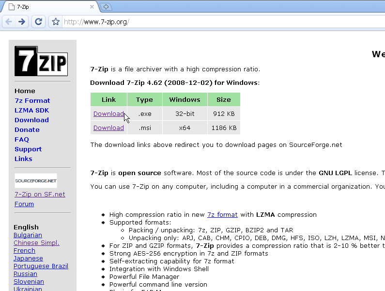
首先，我們要到官方網站下載 7-Zip 程式，你可以依據自己的系統是 32 位元或 64 位元選擇安裝檔案。
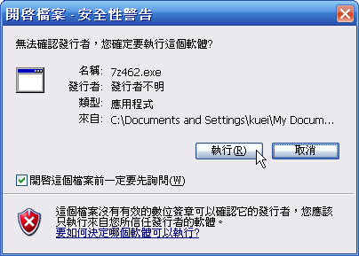
下載後，直接在安裝檔案上按兩下滑鼠左鍵，並選擇〔執行〕開始安裝程序。
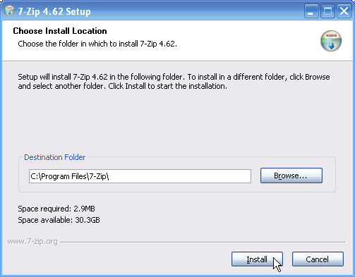
然後按一下〔Browse〕按鈕選擇要安裝的位置後，在〔Install〕按鈕上按一下滑鼠左鍵就可以開始安裝。
安裝後的調整
在完成 7-Zip 的安裝後，你可以調整一下設定，讓 7-Zip 更符合你的需求。例如：我們可以設定 7-Zip 的關聯檔案，讓 7-Zip 以後都能直接解壓縮支援格式，而不需透過右鍵選單解壓縮。另外，你還可以透過 7-Zip 外掛程式管理右鍵選擇，讓它更符合使用者的需求。
設定 7-Zip 關聯格式
在 7-Zip 剛安裝好的時候，你還是沒辦法直接在壓縮檔上按兩下滑鼠左鍵來解壓縮，不過我們可以透過設定關聯格式的方式，讓 7-Zip 支援這個功能。
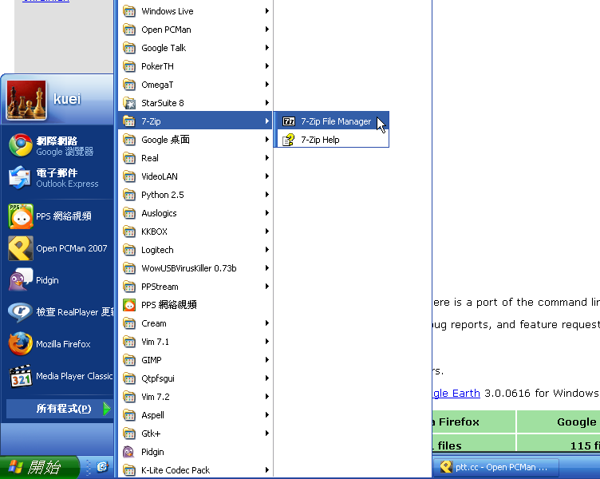
安裝好 7-Zip 後，你可以從【開始】->【所有程式】->【7-Zip】底下找到「7-Zip File Manager」，在上面按一下滑鼠左鍵。
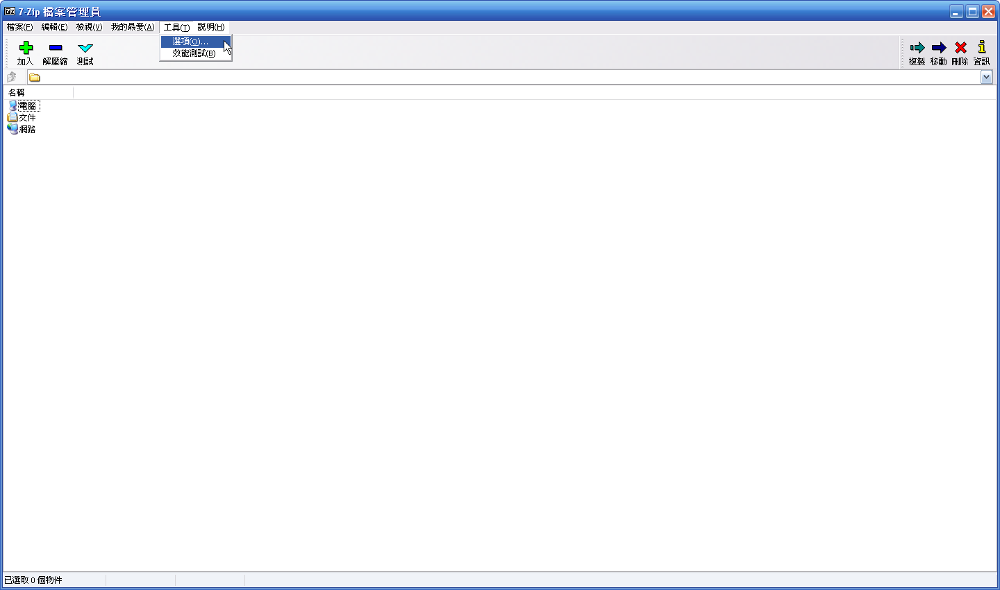
在「7-Zip 檔案管理員」視窗的功能列表中，選擇【工具】->【選項…】。
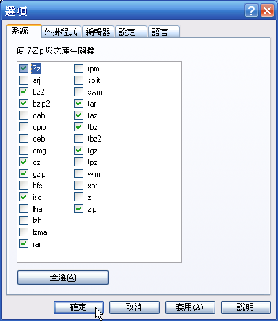
然後你可以在「系統」活頁標籤中，找到 7-Zip 關聯檔案的設定介面，勾選你要和 7-Zip 產生關聯的格式或按一下〔全選〕按鈕後，在〔確定〕按鈕上按一下滑鼠左鍵即可完成關聯。
設定右鍵選單
在剛安裝完的狀態 7-Zip 的右鍵選單預設是全部開啟，在經過一段時間的使用，你可以根據自己的需求和習慣，從 7-Zip 外掛程式調整所要出現有右鍵選單，讓選單更為精簡和方便。
在「7-Zip 檔案管理員」視窗的功能列表中，選擇【工具】->【選項…】。
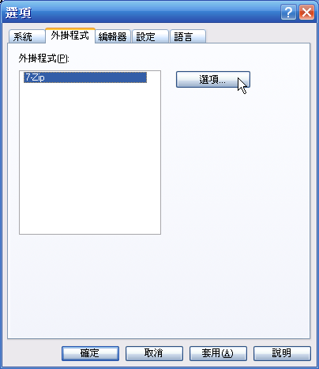
接著在「外掛程式」活頁標籤中，選擇「7-Zip」，再按一下〔選項…〕按鈕。
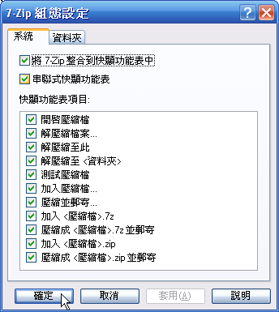
然後你可以看到「7-Zip 組態設定」視窗，在「系統」活頁標籤中，你可以看到「快顯功能表項目」，勾選你想使用的右鍵選單項目後，按一下〔確定〕按鈕退出「「7-Zip 組態設定」視窗。
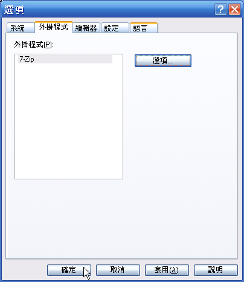
接下來在「選項」視窗中，按一下〔確定〕按鈕即可完成設定。
7-Zip 使用方式
一般來說，使用 7-Zip 最方便的方式是透過右鍵選單，你可以從這裡壓縮或解壓縮程式，不過除了這種方式之外，使用「7-Zip 檔案管理員」也不失為一種便捷的方式。以下我們來看看怎麼透過右鍵選單使用 7-Zip 。
解壓縮檔案
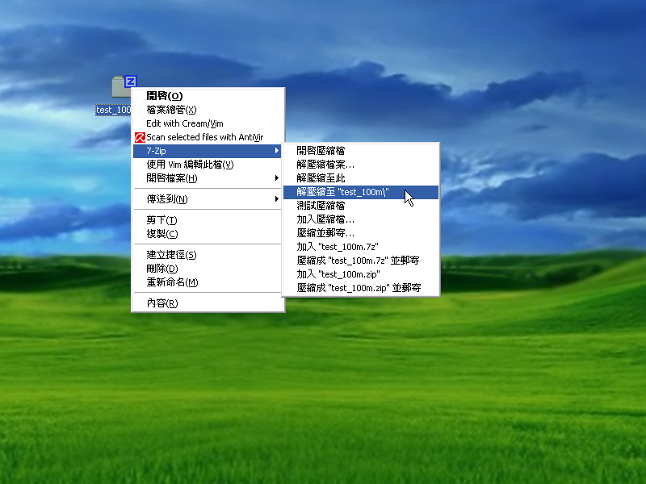
要使用右鍵選單解壓縮，只要在壓縮檔上按一下滑鼠右鍵，並選擇【7-Zip】->【解壓縮檔案…】就可以直接解壓縮。除此之外，你也可以透過【解壓縮至"（資料夾名稱）\"】的選項直接選擇解壓到該資料夾下。
壓縮檔案
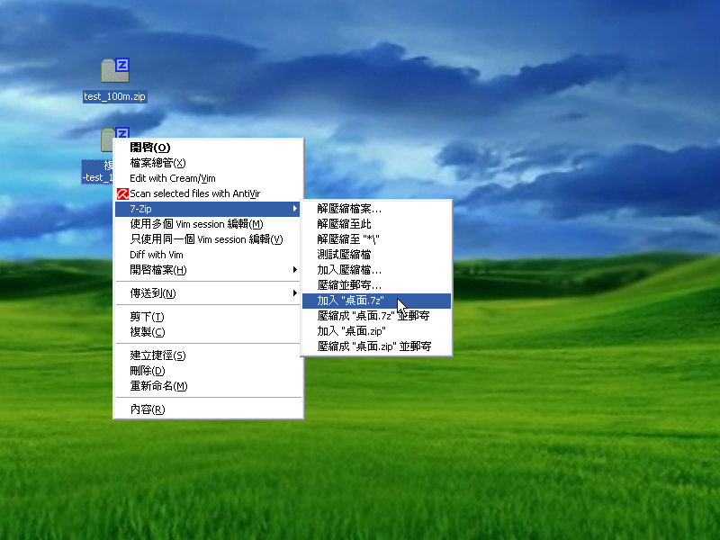
同樣的，我們可也可利用右鍵選單來壓縮檔案，只要將想要壓縮在同一個壓縮檔中的資料夾或檔案全選，並在其上按一下滑鼠右鍵後選擇【7-Zip】->【加入（壓縮檔名稱）.7z/zip】就可以將資料壓縮成你指定的壓縮檔。
壓縮進階設定
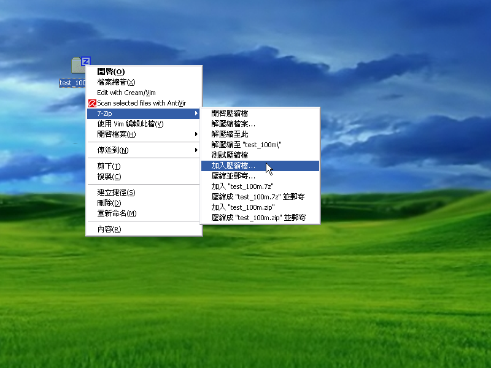
如果你想要進一步設定壓縮檔，例如：加上密碼、分割壓縮檔或是指定加密方式等，你可以在上一步驟的右鍵選擇中，選擇【加入壓縮檔…】。
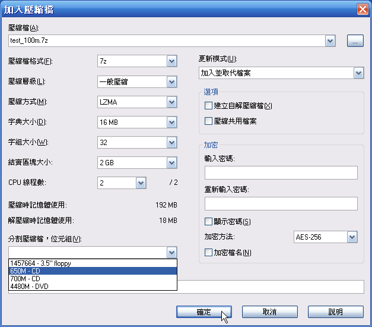
接著你可以在「加入壓縮檔」視窗中，看到各種進階設定，如果你想像 WinRAR 一樣分割壓縮檔，你可以在「分割壓縮檔，位元組」下拉式選單中，選擇你要的分割大小，7-Zip 已經幫你預設好各種常用的大小。不過如果沒有你想要的大小，你也可以直接輸入，但是要記得後面要加上單位「M」，以防切割過多分割檔。
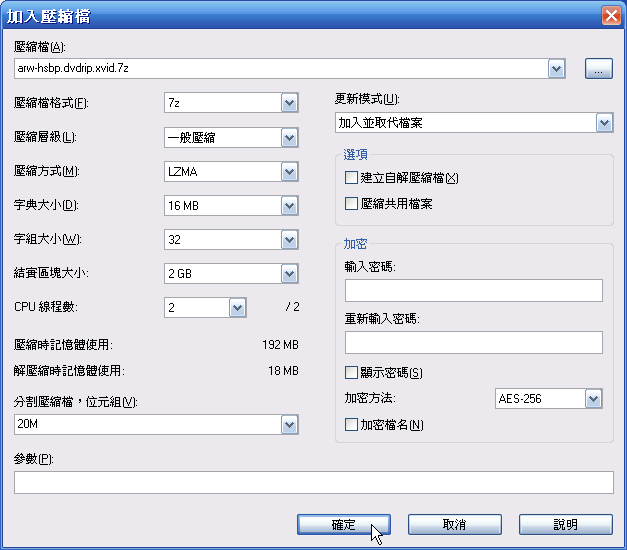
如果你想為壓縮檔加上密碼，那可以在「加密」區域中，選擇你想要的密碼。另外，你也可以利用「選項」區域中的「建立自解壓縮檔」項目，建立 Windows 自解檔。其餘的設定可以依需求調整，在調整後所有設定後，按一下〔確定〕按鈕，7-Zip 就會開始依你的設定壓縮檔案。
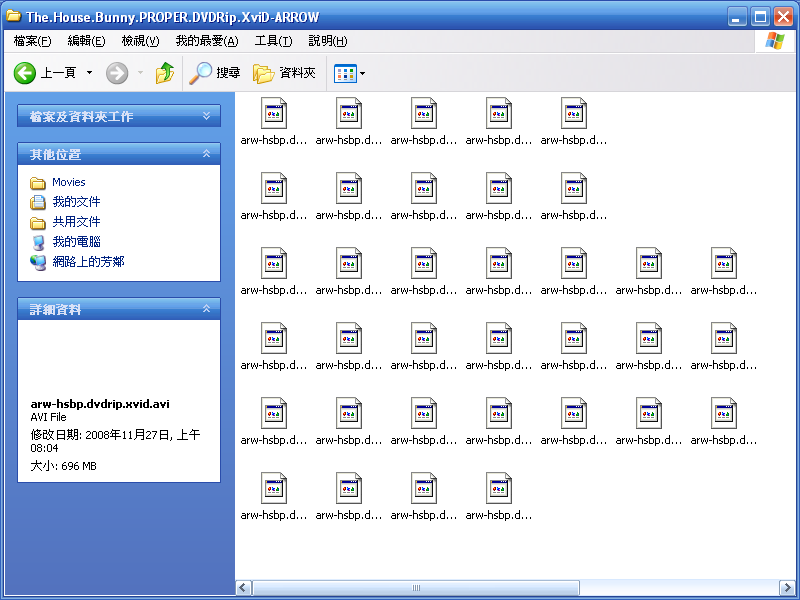
分割好檔案後，可以在原來的位置看到分割好的壓縮檔。解壓縮的方式和單一檔案相同。只要找到第一個檔案後，用上述方式解開即可。